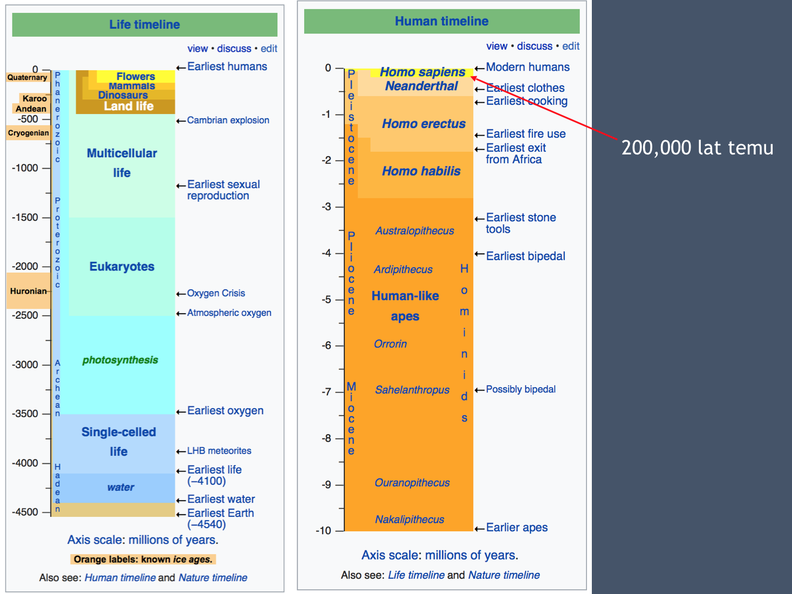
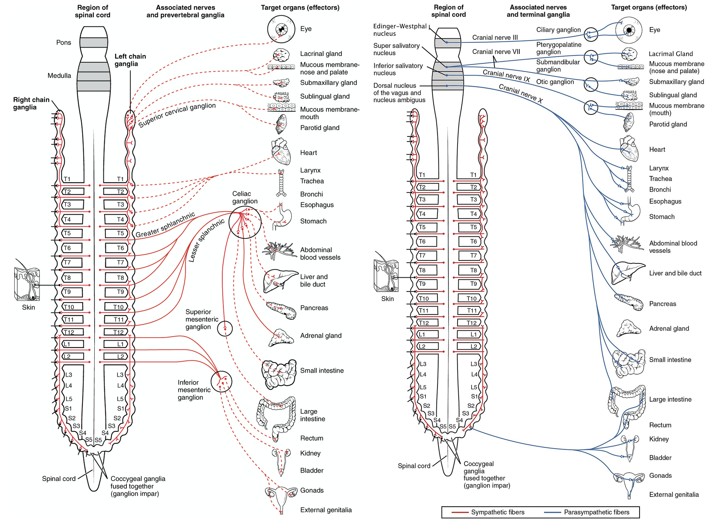

Stres i odporność psychiczna
Krzysztof Basiński
O mnie
- Krzysztof Basiński
- Katedra Psychologii GUMed
- krzysztof.basinski@gumed.edu.pl
- http://kbas.gumed.edu.pl
- http://kbas.gumed.edu.pl/stres
Organizacja
- 4 spotkania
- Forma wykładowo/ćwiczeniowo/warsztatowa
- Przerwy kiedy chcecie
Przedyskutujcie w grupach
- Co to jest stres?
- Co go powoduje?
- Czym się objawia?
- Czy jest negatywny czy pozytywny?
- Jaki jest jego związek ze zdrowiem?
Stres
- Biologiczny
- Psychologiczny
- …a może to to samo?
Stres w biologii
- Stres to odpowiedź organizmu na stresor
- Służy odzyskiwaniu homeostazy
- Reakcja stresowa jest uogólniona (taka sama niezależnie od stresora)
- Reakcja wytworzyła się w toku ewolucji
Do jakiego środowiska jesteśmy przystosowani?

Dwa “składniki” stresu
- Autonomiczny układ nerwowy (współczulny/przywspółczulny)
- Oś przysadka-podwzgórze-nadnercza
Autonomiczny układ nerwowy
- Część obwodowego układu nerwowego
- Reguluje pracę najważniejszych narządów
- Działanie w dużej części nieświadome
- Układ współczulny (reakcja walki-ucieczki, fight-or-flight)
- Układ przywspółczulny (reakcje feed-and-breed i rest-and-digest)

HPA (oś przysadka-podwzgórze-nadnercza)

Stres a homeostaza
- Reakcja stresowa jest w odpowiedzi na zachwianie homeostazy i służy jej przywróceniu
- U ludzi: reakcja stresowa w odpowiedzi na możliwe i prawdopodobne zachwianie homeostazy w przyszłości
- To wspaniale, że mamy taką zdolność, ale…
- W XXI wieku jest z tym pewien problem
Dlaczego zebry nie mają wrzodów?

Dlaczego zebry nie mają wrzodów?
- Zebry nie stresują się:
- kursem Franka i jego wpływem na koszt kredytu hipotecznego
- utratą pracy
- globalnym ociepleniem
- wzrastającą liczbą wypadków na drogach
Przedyskutujcie
Jak stres wpływa na poniższe? Jak przewlekły stres wpływa na poniższe?
- Układ krążenia
- Układ trawienny
- Układ rozrodczy
- Układ odpornościowy
- Wzrost i rozwój
- Mózg
Ostry stres
Układ krążenia
- Zwiększenie tętna
- Zwężenie naczyń krwionośnych
- Więcej krwi = więcej energii do mięśni
Układ trawienny
- Spowolnienie trawienia
- Suchość w ustach
Układ rozrodczy
- Zahamowanie sekrecji hormonów płciowych
Układ odpornościowy
- Większa aktywacja układu odpornościowego - ochrona przed zakażeniem
Wzrost i rozwój
- Zahamowanie wydzielania hormonu wzrostu
Mózg
- Lepsza pamięć
- Bystrzejsza percepcja
- Uwaga przełącza się w tryb czujnościowy